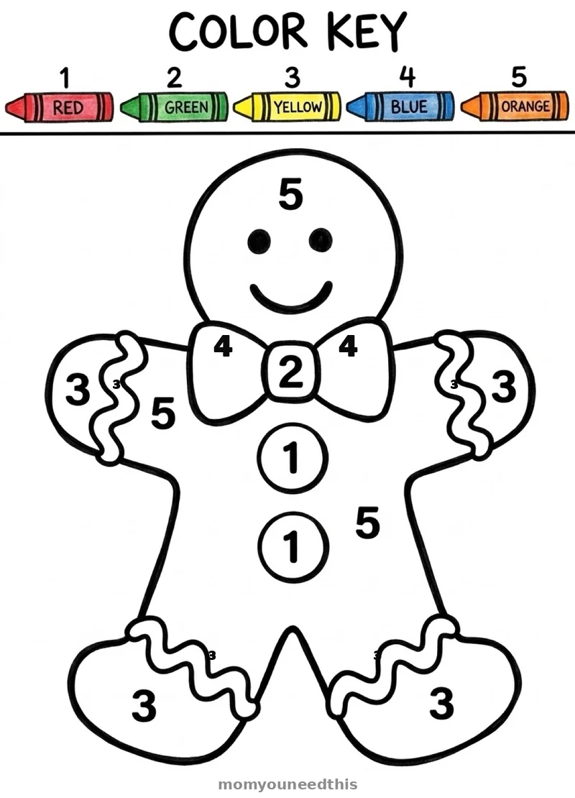

Gingerbread Man Paint by Numbers Free Color-by-Number Printable, Ages 3+
Quick Answer
This free gingerbread man paint by numbers printable is made for ages 3 and up: big numbered sections, large clear numbers, and just 4 colors on the shared color key. The finished picture is a proper cookie: a warm orange gingerbread man with red buttons, a green bow tie, and yellow hands and feet. One thing to know before you start: this sheet's key skips the number 4 — there are no 4s to hunt for on this cookie.
At a Glance
- Activity: Gingerbread Man Paint by Numbers
- Ages: 3+
- Colors: 4 (1 = Red, 2 = Green, 3 = Yellow, 5 = Orange)
- Sections: Extra-large, numbered
- Supplies: Printed sheet + crayons
- Time: ~15 min

🎨 Color Key for This Sheet
This sheet uses 4 colors from the shared key. The numbers mean the same thing on every sheet — 1 is always red, 2 is always green, and so on.
| Number | Color | What it colors |
|---|---|---|
| 1 | Red | buttons |
| 2 | Green | bow tie |
| 3 | Yellow | hands and feet |
| 5 | Orange | body and head |
This sheet skips blue — no floating background dots, just the gingerbread man.
🖍️ How to Color This Sheet
- Set out the crayons. Only the 4 colors this sheet uses — red, green, yellow and orange. Leave the blue in the box: this key has no 4, and fewer choices means a faster start.
- Point at the key together. “5 is orange” — find the cookie body and hold the orange crayon over it. The body is the biggest section on the sheet, and one demo there teaches the whole game.
- Let them work in any order. All the details first — buttons, bow tie, hands — or fill the whole cookie orange and decorate him last, like a real baker. Both are correct. The rule is just: number matches color.
- Say the numbers and colors out loud. “That's a 1 — red, a button!” turns each section into a tiny number-and-color quiz.
🧠 What Kids Learn From This Gingerbread Man Sheet
This sheet is a decorating lesson disguised as a coloring page. A gingerbread man is a plain cookie plus details — buttons, a bow tie, hands and feet — and the paint-by-numbers format separates exactly those two layers: the big orange body first (or last), and the small colored details that give him his character. Children learn that pictures, like cookies, are built in layers.
The details are the sheet's fine-motor gold. The buttons and bow tie are the smallest sections in this set of sheets, small enough to demand a slower hand and a sharper crayon — but there are only a few of them, framed by forgiving big areas. That ratio (mostly easy, a little hard) is what good practice looks like.
The key teaches its own number lesson too: it skips 4. Four colors were enough for this cookie, so the key lists four numbers — 1, 2, 3, 5 — and a child who spots the gap is reading the key as information, not just instructions.
🎨 Make It Your Own
The color key is a starting point, not a rule. Once your child has colored the gingerbread man the “right” way, print another copy and let them bake a wild one: a green cookie, a blue cookie, a gingerbread man with a pink bow tie and rainbow buttons. No bakery would sell him, and that is exactly why he is fun to color.
For a December twist, color one copy together and hang him in the kitchen as this year's gingerbread decoration — or trace the finished man onto card and cut him out for the tree.
🖍️ More Paint by Numbers Sheets
Try another sheet — same color key, new picture.
👨👩👧 A Quiet Activity That Actually Works
The gingerbread man is December's most patient activity. While real cookies bake and cool — the part of baking children find hardest to wait through — this sheet gives small hands a cookie of their own to finish. It pairs naturally with a baking afternoon: color him while the oven works, and compare the two gingerbread men at the end.
Four colors and one page also make it a good quiet-time sheet beyond the holidays: restaurants, waiting rooms, and the wind-down before dinner. And because the picture is a character rather than a scene, finished copies tend to get named, kept, and pinned up — he is hard to throw away.
❓ Gingerbread Man Paint by Numbers FAQs
How does the gingerbread man paint by numbers sheet work?
Each section of the gingerbread man picture has a number. Match the number to the color key (1 = Red, 2 = Green, 3 = Yellow, 5 = Orange), pick up that crayon, and color the section. The body is orange (5), the buttons are red (1), the bow tie is green (2), and the hands and feet are yellow (3). Note that this sheet has no number 4 — its key uses only four colors.
What age can kids do this gingerbread man paint by numbers sheet?
Ages 3 and up. This sheet uses 4 colors and extra-large numbered sections, so preschoolers can manage it — the body is one big forgiving area. The buttons and bow tie are the smallest sections in the set, so a younger child may want help (or a sharper crayon) for those.
Is this gingerbread man paint by numbers printable free?
Yes — completely free, no signup or email required. Download the PDF, print it, and color it as many times as you like. Finished gingerbread men make sweet homemade Christmas decorations.
📚 Keep Exploring
- 🎨 All Paint by Numbers Sheets 8 free color-by-number printables for kids.
- ✏️ Drawing Tutorials 76 free step-by-step drawing tutorials for kids.
- 🎁 Free Resources Free printables and resources for busy moms.